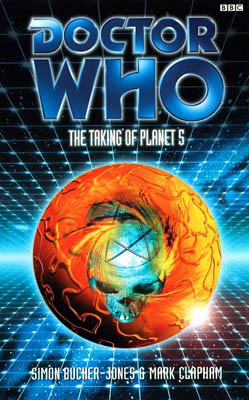

|
The Taking of Planet 5
|
BASIC PLOT DOCTOR COMPANIONS MATERIALISATION CIRCUIT Pg 42 Antarctica, some 12 million or so years ago. The description of the noise - 'the sound of several basic laws of physics being elbowed repeatedly in the ribs' - is great. Pg 244 Antarctica, 1999AD. Pg 261 Deep Space, somewhere near where Planet 5 used to be, twelve million years ago. Pg 271 Various places around the universe, including the Nepotism of Vaal, to observe the effects of the Fendahl Predator. PREPARATORY READING CONTINUITY REFERENCES To give you an idea, the first continuity reference appears even before the prologue: "Not that that's any consolation to the outsiders, I expect, even if they get baked into a pie - as is the custom among the Androgums." The Two Doctors. Oh, and the second. "The sessile stalagbats of Marinus affect not to notice the echo soundings of their cave-mouth-dwelling cousins." The Keys of Marinus. Oh, and the third. "Extract from Captain Cook's Letters from Golobus." The Greatest Show in the Galaxy. Prologue Pg 1 "When he had been allowed in the dark councils of Mictlan. This happened soon after the masters of the Celestial Intervention Agency, the Celestis, had pulled the doors of perception closed behind themselves lest their histories be unravelled in the war with the Time Lords' future enemy." In order Alien Bodies, Alien Bodies and Alien Bodies. Prologue Pg 4 "I will show you universes in a bowl of gruel." Whatever apparent nonsense this may be in terms of meaning - a fine example of language over clarity if ever we saw one - it's a reference to the ritual sequence in the fourth episode of Snakedance. Pg 9 "Lost on her remote world, which, while it had been of Earth origin, had also been raised to a pattern set by Faction Paradox, the militant voodoo hippies from beyond time. There he had died and been remembered by Compassion's people. As he had been remembered, so he had been reborn by their technologies. Not once, but many times, and the end result of that chain of memories had worked with her, until the Doctor had caught up with the program, and the TARDIS had remembered Fitz back the way he had been originally." Interference parts I and II, a complete bugger for continuity when you come to The Ancestor Cell and EarthWorld (so see Continuity Cock-Ups below) and there is absolutely no excuse for the American spelling of the word which should read 'programme'. Pg 10 "He didn't remember much of their time as the Doctor's - there was no nice way to say it - enemies." Interference parts I and II. "He hadn't seen much of her during that business with the Enclave and the fit Time Lady." The Blue Angel. "He missed Sam; either Sam, any Sam." The Eight Doctors et al and, for 'Dark' Sam, Unnatural History. "Surely not even the sinister paintings of Pickman and Martinique himself ever held so sublime a shudder." Martinique is from Demontage, whilst Pickman, in a bit of clever foreshadowing, is from an HP Lovecraft short story called 'Pickman's Model', published in Weird Tales in October 1927. Fitz isn't entirely sure where he got the name 'Pickman' from. "Get Fitz to tell you about the Vega Affair properly." Demontage. Pg 11 "It was a singularly gruesome business." Given the later commentary on Timelash (see below), this could well be a rather snide remark as regards Demontage by Messrs. Bucher-Jones and Clapham. "Interstellar diplomacy, poker, shove-ha'penny and basic art criticism." Demontage. Again. Pg 12 "With the Enclave up in smoke, if anyone can suggest a back way into the Obverse, they should be able to." The Blue Angel. Pg 13 "They were, Fitz gathered, both friends (possibly, in the case of Mildeo, a rival) of someone called Vorg the Magnificent." Carnival of Monsters. The section that follows this revelation is clearly supposed to be funny. Pg 14 "No, but I've got nine types of Yeti, including the robotic and the fungi varieties." Lovely reference to The Abominable Snowmen and The Web of Fear, except for one small problem. So see Continuity Cock-Ups. Pg 15 "Specifically chosen because the best reconstructions made up to the mid-twenty-ninth century were conclusively proved by zigma-photography to be completely wrong." We guess that zigma-photography is the ability to take photographs through time, and that the technology is loosely comparable to the Zygma beam of The Talons of Weng-Chiang fame, although note that the spelling differs. (The version of the spelling that we give here is taken from the Script book and Target novelisation of Talons.) "'Here,' Mildeo intoned proudly, 'we have the entirety of the Solar system. Vulcan, of course, nearest to the sun - as detected wrongly in 1880, disproved by Einstein, and then deliciously discovered again in 2003, only to vanish by 2130.'" Neat, if only in terms of the humour, because it's certainly not any form of explanation. Nonetheless, this makes The Power of the Daleks work, we suppose, so that'll do. Pg 16 "Onward through jungled Venus - note the stuffed Venusaurus erectus." Venusian Lullaby. "Hyperborea, Mu, Atlantis, Hy-Brasilica, Antilles." All various names from various science-fiction tomes, but it should be noted that the Hy-Bractors appear in Only Human. "'Oh dear.' The Doctor sounded disappointed by something. He was examining a planet between Mars and Jupiter." The Planet of the Fendahl, from Image of the Fendahl, also known as Planet 5, about which much of this book will be about. Pg 17 "I'm only allowed to include Vulcan because it wasn't real when people though it was, and one of our sponsors thinks it was invented by Star Trek." A reference to the age-old argument between Who and Trek as to which one invented Vulcan first. Mildeo goes on to comment vis a vis Star Trek: 'I take it your friends aren't into the classics. Still, who is?' Pg 19 "So be it. It was war. The moment had been prepared for." In a page and a half spiel about forced regeneration, it is perhaps only fitting that the last line is, perhaps, the most famous on the subject, drawn from Logopolis. Pg 24 "The last shall be first and the first last." There's lots of biblical imagery throughout the book, but it's possible that this one is more relevant to the Time Lords than most, given that it's normally paired with the 'Alpha and Omega' bit. And we all know where Omega comes from. Not to mention the echoes of 'he who wins shall lose' from The Five Doctors. Pg 27 "'Correspondence sent to 221B Baker Street,' explained Mildeo. 'The nonexistent address of the entirely fictional Sherlock Holmes.'" This sounds like a continuity error, but it's not. Even All-Consuming Fire made it clear that Holmes was fictional; the adventures happened, but to people with different names and 'Watson' fictionalised those segments that pertained to names and places. Funny, though, that All-Consuming Fire is the book under target here, given what we're about to learn about the Great Old Ones that also appeared in that book. "I had enough problems with unspeakable and ancient whatsits from the dawn of forever in my last incarnation." The Curse of Fenric and upwards of half of the NAs. Pg 28 "'"Old One, a.k.a. Elder Thing. Source: H.P. Lovecraft's At the Mountains of Madness, first pub. Astounding Stories, February-April 1936. Widely regarded as real by twenty-fifth century fringe archaologists, particularly Bendecker, Vilsdon and Urnst." It.' Space of a heartbeat. 'Isn't.' Space of a second heartbeat. 'Real.'" Beautiful moment for the Doctor here. The reference to the Old Ones goes back to White Darkness, All-Consuming Fire, Millennial Rites, Divided Loyalties and Synthespians™ and, in so doing, creates no end of problems, so see Continuity Cock-Ups. Urnst, by the by, was mentioned quite extensively in The Highest Science. Pg 29 "Fitz found himself nose to nose with a pickled alien foetus in a jar. It's almond-shaped eyes stared blankly into his [...] Mildeo sighed, picking up the jar gently. 'There was a time when people believed things like this were hidden everywhere.'" A sly and snide reference to The X-Files. "Quite a find, really, dating back to the Humanian Era." The Telemovie first gave us these rather inaccurate, all-embracing terms for time periods. "Waiting for the signals, thought Fitz." Compassion still likes television, a hangover from her origins with the Remote in Interference part II. Pg 31 "'What, join the expedition?' asked Fitz, visions of the great explorers he read about as a boy flitting through his mind. Scott, Amundsen, Howberry and now Kreiner." Weirdly, because they can't possibly have known back then, but this predicts Fitz's interest in exploring cold wildernesses that will eventually reach fruition in Camera Obscura and Time Zero. Pg 35 "Designed to relate to its pilot via a symbiotic bond woven into that pilot's very being." The Two Doctors. "Several sections of the ship were not block transfers at all but were built from actual materials from the real universe." Logopolis. Rather wonderfully, given that we later learn that the console is one of these real-universe things, that explains why, when the TARDIS is shrinking in Logopolis, the console doesn't appear to. Pg 36 "The Doctor slapped his forehead. 'Mictlan!' he exclaimed." Alien Bodies. Pg 38 "There was tension among the handful of newborns drafted in after the heavy losses of the Third Zone fiasco." Probably a reference to the 'Genetic Politics Beyond the Third Zone' book referenced at the beginning of Alien Bodies. Also a reference to The Two Doctors. "All the conscript species the enemy has co-opted." The fact that the Enemy has lots of species on its 'books', as it were, may explain why The Quantum Archangel stated that the Enemy were the Daleks when every other single piece of information we've ever received (specifically Alien Bodies, which categorically stated that the Enemy were not the Daleks) states otherwise. If you go with the AHistory theory that the two Time Wars were in fact one, the Daleks may well have been involved late on, explaining the Ninth Doctor's hatred of them as exhibited in Dalek. Pg 39 "The subcommittee who had authorised the mission had briefly considered Mars as a suitable platform for the attack on Planet 5, but its advantages in terms of proximity were outweighed by the difficulties inherent in trying to hide a strike force in a devastated wasteland inhabited by a few bunches of reptiles." Consistent with The Ice Warriors. Pg 43 "The Third Zoners had been on the verge of Parallel Weaponry." They'd also been on the verge of time travel way back in The Two Doctors. Pg 44 "The forward base was a collection of old SNOW-CAP geodesics, dug into the snow." The Tenth Planet. Pg 46 "He recognised his reflection in the endless mirrors. Urmungstrandra: the devil god of the Silurians." Seriously? Most gods of species have nice simple words like, well, 'God'. The Silurians created a god with a name both impossible to pronounce and spell? OK; they must have done. Not that it was mentioned in Doctor Who and the Silurians or Warriors on the Deep. Pg 48 "Like all the Lords Celestial, Smoked Mirror was linked to the block-transfer engines." Logopolis. Pg 49 "A Lord trying to return a black scroll." The Five Doctors. "A House was gone." Possibly a deliberate reflection of Lungbarrow. Pg 53 "Fitz was unsure of the wisdom of telling a former ally of Faction Paradox the detailed workings of advanced weapons systems." Compassion was such in Interference parts I and II, but then, so was Fitz. Pg 55 "No point staring into that abyss any longer than necessary." Back to the old NA 'The Abyss also stares into you' tagline that first appeared in The Left-Handed Hummingbird. Pg 56 "But that degree of interstitial distortion could have weird effects on perception." Interstitial comes from The Time Monster and, more recently, Falls the Shadow. Pg 57 "Well, it can't be Griffin." Unnatural History, and, hilariously, we get a footnote telling us that. Can you imagine if every continuity reference was footnoted in the same way? It would read, well, it would read like the essay at the end of The Taking of Planet 5, that's what it would read like. Pg 59 "Omega's stellar manipulator" The Hand of Omega, which first appeared in Remembrance of the Daleks. Pg 60 "Hybrid clockwork technology from the Gothick Whorl, innards of Karfelon circuitry like tinsel at Christmas." Timelash, and a more than fair description. "His Family, and other animals." A misquoting of the title of a famous book by Gerald Durrell. Pg 62 "Constellation named for Stellion Mutter, the prehistoric cartographer." Hence Mutter's Spiral, first mentioned in The Deadly Assassin. Pg 64 Mention of both Rassilon and Omega. Pg 65 "Despite the account of his childhood he had spun for Sam, he hadn't spent all his schooldays running from Krautbashers." The Taint. Pg 66 "Dear God, please let him have at least a rudimentary plan." Fitz here speaks for all of us. Pg 67 "Did Fitz ever tell you about Sam telling him about the time when we ran into those aliens who were auctioning a superweapon in Earth's future rainforests?" Alien Bodies. "Compassion started. 'At war? With Faction Paradox?' 'I shouldn't know, but I don't think so. That'd be like a war between the United Kingdom and the Hare Krishnas.'" See The Ancestor Cell for the conclusion to this. "Fitz wondered if Compassion was angry - Faction Paradox had been like the Gods of Myth to her people." Interference parts I and II. Pg 76 "One of them, posing as a Time Lord! I hardly think their psychology would allow it." This would suggest that, physically, the Enemy could indeed pose as Time Lords, thus suggesting that The Quantum Archangel's suggestion that the Enemy were the Daleks is, in fact, erroneous. Pg 77 "If he was unlucky he'd be declared material. Go to the Looms." Human Nature and Lungbarrow showed us the Looms. "An adaptation of the superganglia to the war." Mentioned - and seen - in The Invisible Enemy. Pg 79 "The Nestene, the Zygons, the Rutan horde." Spearhead from Space etc, Terror of the Zygons etc, Horror of Fang Rock etc. Pg 80 "I'd prefer reptiles: eighty-seventh century Earth Reptiles with transforming T.rex time machines." Sheer fantasy on the Doctor's part (although better than what we eventually got), but it mentions Earth Reptiles, from Doctor Who and the Silurians et al. "There was a time when it always seemed to be Saturday when I was on Earth, and the children's programmes were excellent, if my memory doesn't cheat." Flippant, but rather good reference to the Earth exile period of the Third Doctor's tenure and John Nathan-Turner's famous catchphrase. "They'll probably be terribly disappointing. With my luck it'll turn out to be Yartek, leader of the alien Voord, with a big stick." Still better than what we actually got, and a reference to The Keys of Marinus. Pg 81 Mention of Atlantis, that old Doctor Who standby from The Time Monster et al. Pg 83 "He produced a snuff box from his sleeve and inhaled a pinch of powdered acetylsalicylic acid. It would have killed a normal Time Lord in seconds." The old aspirin story that lots of people think comes from The Mind of Evil. In fact, Kate Orman inadvertently created this weakness in The Left-Handed Hummingbird, because she misremembered The Mind of Evil. Pg 84 "Crude zygma distortion from unshielded time-wind penetration?" Zygma distortion from The Talons of Weng-Chiang, and note that the spelling is correct now, suggesting that only one of Bucher-Jones and Clapham actually knew or bothered to check. The time winds come from Warriors' Gate. "Memory. The cloying scent of Mustakozene-80. The feeling as the cells opened up, gorging on the genetic pattern of the Morlox creature, incorporating its structure into his own. The hatred of the meddler, first in white frills and velvet, condemning him to the Science Council - those purblind fools! - for his experiments, then louder, more hateful still in coloured fools' garb." Timelash, if you couldn't tell, described, after he has experienced it, by Investogator One as... "'Nothing useful,' he said huffily, adjusting his robes. 'A most distasteful episode.'" Which is pretty much fair enough. We're certainly not going to try and defend Timelash here. Pg 85 "He was born of the House of Redloom, a family known for its initiative and inventiveness." The same house as Andred, from The Invasion of Time and Lungbarrow. Also see Continuity Cock-Ups. Pg 87 "With his frock coat and waistcoat, he seemed like a Napoleonic commander inspecting the troops." Possibly something he learned during World Game. Pg 88 "General Loombridge used to lead from the front, back when the war began. In the breach on the Stangmoor Penal Colony, breaking quarantine to investigate an outbreak of Green Cancer on L'nf!XfX!, holding back fiendish hordes of Brendonites." This is all Brigadier Lethbridge-Stewart and refers, in order, to The Mind of Evil, The Green Death and Mawdryn Undead. Pg 89 "The Doctor, Fitz decided, didn't seem sure if he was John Mills or Nicholas Parsons." Good job Fitz wasn't around in The Curse of Fenric; he'd have gone, 'Hang on a minute, don't I know you?' to Reverend Wainwright. Pg 96 "An idea can kill you faster than a gun; that's voodoo." Possibly a reference to Faction Paradox but also, we'd like to add, sheer nonsense. Pg 97 "Maybe you're a Great Old One on your mother's side." The Telemovie, and a glorious reference this one, may we just say. "It's trying to turn me into an expert narrative voice." The beginning of the Telemovie. Pg 99 "In the shadow of the Dark Tower, running through the Death Zone. Rastons move like quicksilver at the edge of his vision." The Five Doctors. Pg 100 "He was another of the Lord President's former renegades, reintegrated but barely reformed. Gallifrey was full of such -" It's not clear who this is, but from the 'plummy tones', crimson robes and agedness of the figure, it's very likely Borusa, back, once again, from the dead. The giveaway here is that he finds the Death Zone the most despicable place in the galaxy, probably still smarting because this is where he lost the Game of Rassilon in The Five Doctors, and has thenceafter spent probably centuries encased in stone. Pg 103 "Your civilisation is ticking its way to a Millennium." The Telemovie, Millennial Rites, Millennium Shock and so on. "The British have dismissed seventeen alien invasions as hoaxes to my certain knowledge, and that's only in the last twenty years." The Web of Fear, The Invasion, Spearhead from Space, The Ambassadors of Death, Terror of the Autons, The Claws of Axos, The Daemons, Day of the Daleks, The Sea Devils, The Green Death, Invasion of the Dinosaurs, and Remembrance of the Daleks should probably be in there. Have we got to seventeen yet? Pg 105 The Doctor smells of "old exitronic circuitry." From the Matrix and first mentioned in The Deadly Assassin. Pg 106 "She knew that the Doctor had rerouted it through the TARDIS to 'protect her' from harmful signals." He did this in Interference part II, and the results will be seen in The Shadows of Avalon. Pg 109 "There was something wild and feverish about him, a dilation of the eyes Fitz hadn't seen in anybody since Tibet." Revolution Man. Pg 111 "She was first and foremost a child of Anathema, of the Remote." Interference parts I and II. Pg 113 "All the best of his people went mad in the end - mad, bad or dangerous to know. Omega, Rassilon, even Borusa, all lost it in the pressure cooker of a society cursed with infinite power." The Three Doctors, The Five Doctors, The Infinity Doctors and so on. Pg 114 "Every time sensitive this side of Deneb". Deneb is referenced in the stage-play Doctor Who: The Ultimate Adventure, and a comic called Touchdown on Deneb-7. We doubt that either of these are supremely relevant to the unfolding plot here. Pg 115 "I am the Doctor. I have walked in eternity. I have died many times. I have fought countless monsters. I have saved countless lives." All true, of course, and the 'walked in eternity' line comes from Pyramids of Mars. That said, this section somehow contrives to sound like the lyrics to the famous Jon Pertwee record, 'I am the Doctor'. "He could make out its outlines, a creature even vaster than the Kraken he had encountered in San Francisco." Unnatural History. Pg 120 "'Your accent's very pure,' the Doctor said, 'considering you're from the future. Very little consonantal shift." State of Decay. "It is an Elder Thing macrolithic device, derived, I believe, from a Tau Cetan genus that eventually evolves into the Ogri." The Stones of Blood. And see Continuity Cock-Ups. Pg 121 "TARDISes translate everything for us, or time rings." Time Rings have their origin in Genesis of the Daleks. Pg 124 "Hell, I still say try anything once except incest and country dancing." The Doctor said this in Warmonger just before he avoided seducing Peri, despite how much she appeared to want him to. Just thought we'd take this opportunity to remind you of that moment once again. Pg 127 "There were nine identical Gallifreys, one down since they lost a homeworld in the battle of Mutter's Cluster." Mutter's Spiral, the location of Earth, was first mentioned in The Deadly Assassin. "Devastated by the disastrous rout at Delphon." Delphon was mentioned in Spearhead from Space. Pg 131 Another mention of the Kraken from Unnatural History. "Then let them see, dimly in a glass darkly." Biblical reference quoted, very nearly, but not quite mentioned in The Curse of Fenric, but it does appear in the novelisation of said story. Pg 135 "One of his earliest post-Loom memories had been of a gang of hard-bitten inductees sharing a banned copy of Doctor ? - all proper names had been auto-edited out of bases' message system for reasons of war security, and even the downloaded underground flimsies hadn't been free of the software - In an Exciting Adventure With the Enemy." Based on fandom watching scratchy old video tapes of ancient adventures, before the advent of DVDs and narrated audios, and also the original novelisation, Doctor Who in an Exciting Adventure With the Daleks. And see, inevitably, Continuity Cock-Ups. Brief and fairly irrelevant reference to Sontarans and probic vents, from The Time Warrior. "Allopta might even be a Faction agent, multiplied so as to paradoxically appear repeatedly in the same time-space location." As occurred in Unnatural History. Pg 141 "The Fendahl was a kind of super-vampire, a creature that could suck all life into itself, convert other organisms into component parts to form its gestalt, and generally eat its way across the smorgasbord of the space and time. It survived twelve million years once, playing dead inside a skull." Image of the Fendahl, as is lots of this book from this point on. Pg 143 "A brief period on diplomatic translation for the UN during the 1970s had led to a UNIT assignment." Possibly a reference to either The Mind of Evil or Day of the Daleks. Pgs 143-144 "Those were the peak years, when barely a weekend passed without some three-headed bastard landing his saucer in Kiefer Square and demanding the brains of Earth's poodles in a big vat." Paul Magrs must have read that line and gone, 'Hey, I've got an idea...' Pg 147 "Press the symbol shaped like an oblate Klein bottle." Klein bottles will be back with a vengeance in The Ancestor Cell, in exactly the way Lawrence Miles had not intended them to be in Interference part I. Pg 152 "Chronovores look like tadpoles in a stagnant pond." The Time Monster and the NA arc that ended with No Future. Pg 155 "Some time ago a very brave soldier offered some aliens the secret of the universe as payment for a weapon. They laughed at him of course, but I never thought he was quite as barmy as he seemed. I mean he couldn't be, could he? Practically nobody is - besides, I get that treatment myself quite a lot and I've never liked it. So I took the precaution of memorising the secret." Ben Hurkett adds: This sounds remarkably like Colonel Kortez in Alien Bodies. The 'relic' Kortez is bidding for is considered by some to be a weapon (p107), and although I don't think he ever uses the phrase "the secret of the universe", Kortez describes his bid as "greater than any material reward" (p127) and that he has an "understanding of the universe" (p146). On page 210 he also describes it as "the ultimate prize. The holy grail of all intelligent life in this universe" but, on the other hand, more explicitly says it is "the secret of inner harmony". Throughout the book, nobody takes him seriously, and he certainly acts barmy. So it seems quite a good match... until page 233 where the Doctor strongly implies he really is just crazy. Pg 156 "Eric Blair was saying something like that to me only the other day, I remember." Eric Blair is the real name of George Orwell, who will later appear in History 101, not that History 101 actually gives you that information. If the Doctor really has met him, he'd forgotten by then. Although, to be fair, he'd forgotten pretty much everything by then. Pg 157 "'Your fears are justified,' said Two, beginning her transition. 'He knows his destiny lies with us, and may be diminishing Mictlan to escape that future.'" Because he made a deal, in later life, which we heard about in Alien Bodies. Pg 158 "The aspirin impacted her genetic structure and began to interfere with it." Back to that The Mind of Evil/The Left-Handed Hummingbird thing again. Pg 159 "Oh, Grandfather" Compassion swears by mentioning Grandfather Paradox, first mentioned in Christmas on a Rational Planet and who finally appears in The Ancestor Cell, though not as was ever intended. Pg 160 "They're trying to get to me" Prefiguring Compassion's TARDIS-like status at the moment, which becomes permanent in The Shadows of Avalon. Pg 164 "The dwarf-star-alloy tools blunt our time instincts." Warriors' Gate. "Our young are removed and held at a distance." Consistent with Marie's experience in Alien Bodies. "The symbionts: the Rassilonic Imprimatur, living in the blood and looking out through the eyes, dancing to the old agenda of the Dark Times." The Two Doctors, The Five Doctors. "Some say we are the other side, or will be." Yet another fantastic idea for the identity of the Enemy which would go on to be ignored in The Ancestor Cell. "Tell us of hatred." Possibly a momentary reflection of Snakedance, but I'm not entirely sure why I think that. Whichever, this is the last line of a fantastic sequence with so many good ideas that you kind of wish that at least one of them had been realised in future books. But it was not to be. Pg 165 "We... we were just copies, I guess. The traces left by Faction Paradox in a human colony. Twenty-fifth generation revolutionaries." Interference part II. Pg 168 "Who cared if mere anarchy would be loosed upon the world?" A mis-quoting of WB Yeats' The Second Coming, making two Yeats quotes in two consecutive novels. This poem also provided a hefty chunk of the source material for Babylon 5. "A few more minor interventions on his part, and he could commune with his Master and be back in time for tea." Survival, implicitly. Pg 172 "If that happened, the whole area would be flooded with Artron energy." From The Deadly Assassin. "As Vuilp struggled to insert a cipher-indent key into the feeder locks." The key comes from The Deadly Assassin. "The TARDIS changed, its chameleon circuit refashioning it into a faceless sphinx." Dead Romance. "A D-mat gun." From The Invasion of Time and see Continuity Cock-Ups. Pg 173 Artron energy, from The Deadly Assassin, turns out to be measured in atto-Omegas, named after the guy from The Three Doctors. "The tutor had smiled a grim smile, and her teeth had been as white as the fur of the rat." Given that she's messing around with cats and mice, and, given that we know the President in the future has been calling back old renegades, we're going to go out on a limb and say that this one was the Rani. Pg 174 "The Doctor, Holsred noted, was red as a cooked Clawrentular" From the stage play Doctor Who and the Daleks in Seven Keys to Doomsday. But see, inevitably, Continuity Cock-Ups. Pg 185 "He simply altered into a form more suited for the hardship of travel - the sturdy, flame-charred figure of Tehke, the God known as the Burning One." From Twilight of the Gods (the Benny book, not the Second Doctor MA). Pg 193 "Stay well away when we light the blue touchpaper, Doctor." Possibly a reference to The Brain of Morbius. Pg 196 "Hume leaned back, away from the body, and laid the blooded trepanning tools down in the kidney-shaped tray." Hume - actually Homunculette from Alien Bodies - can perform autopsies, just as the Doctor can do, as he proved in Kursaal. Pg 202 "He could see a distorted gap into time and through it a room in which a fair-haired Nordic-looking man threatened two other men and a woman with a revolver." As we find out in a few pages time, this is an image from, appropriately enough, Image of the Fendahl. "He pulled himself past the image, further towards the future, past other images - of fire, this time. He has escaped his fear, whatever it was, for the moment." The Doctor's fear of fire stems from Inferno and was made visible in The Mind of Evil. Pg 203 "He still didn't know how she had piloted the TARDIS that time in the Enclave." The Blue Angel. Pg 205 "He had fought the Fendahl and won." Image of the Fendahl. Pg 206 "'And how exactly did a nice young space girl like you get to know so much about the niceties of human weapons?' 'I used to sell them,' said Compassion simply." Interference part I. "Somewhere out there, deep beneath the ice, it was waiting for them." A paraphrase of the final line of both the novelisation of An Unearthly Child by Terrance Dicks and that of Planet of Giants by Terrance Dicks, and in both of those cases, what was waiting for 'them' was the Daleks. "Oh dear. He had a sneaking suspicion he had just discovered the source of the time fissure that had run from twelve million years in the past upward through the 1970s - the time fissure that had allowed Fendahlman's hotchpotch of a time scanner to work at all." Image of the Fendahl and see Continuity Cock-Ups. Pg 207 "On his way 'up' the TARDIS, crawling along the fissure, he had seen out of the time scanner from the other side, seen Max Stael draw a gun on Fendleman and Adam Colby, seen Thea Ransome again before she had paid the ultimate price, before she had become the Fendahl itself." As we mentioned, this is the bit from Pg 202, confirmed here as being from Image of the Fendahl. "If he could make the TARDIS sense danger rather than a wounded pilot, force it to activate its Hostile Action Displacement System." From The Krotons, and see Continuity Cock-Ups for one of our more facetious entries. Pg 212 "Our monster friend here would have to have a certain amount of expertise, and not a little in the way of symbiotic nuclei." The Two Doctors again. Pg 213 "No one in this solar system will possess that kind of technology for the next couple of millennia." The technology in question is 'basic space-time transference', and it's possible therefore, that this is a reference to a similar-seeming device in The Dalek Master Plan. Pg 214 "Stripped of the outer core, the naked singularity that resided at the heart of every Gallifreyan time ship, to link it back to the original black hole preserved in the core of their homeworld, blinked balefully before it too was swept away." This line performs the impressive feat of marrying the seemingly contradictory accounts of black holes as TARDIS energy sources in The Deadly Assassin and the Telemovie. Pg 216 "It was far easier to move planets than eliminate them - although not, generally from the core of a chronic hysteresis." As was done to the Earth in The Trial of a Time Lord. The last bit references Meglos. Pg 219 "One part of it reached back. Long ago and far away in the past, the Delphons and the Tersurans lost any but the most tenuous forms of communication, driving evolution to desperate expedients to salvage their species' potentials." Interesting view of evolution as having a mind and a specific goal, but gorgeous references to the species mentioned by the Doctor in Spearhead from Space and the comic relief special The Curse of Fatal Death. Pgs 220-221 "The attempt to time-loop it was, you may be interested to learn, unsuccessful. It escaped in a way, turning itself into psionic energy beamed at the inner planets. Its last remains are due to be disposed of twelve million years from now." Image of the Fendahl. Pg 227 "'I was talking!' he screamed." Unintentionally prefiguring The Idiot's Lantern. Pg 230 "One of the simple philosophers of a primitive world she had once studied had said that people who fought monsters eventually became them." The tag-line from the NAs, starting in The Left-Handed Hummingbird, but see also Continuity Cock-Ups. Pg 236 "Free of this virus that seemed so like a Time Lord, and yet so unalike." Presumably the half-human thing again, from the Telemovie. Pgs 236-237 "No Time Lord had come to free it from the subjective millions of years it had spent spread across space and time, burning and freezing and subject to the indignity of being probed by primitive time scanners." The broken TARDIS turns out to be the time fracture that was being probed in Image of the Fendahl. Oh, and see Continuity Cock-Ups. Pg 238 "We fled together, the TARDIS and Susan and me." An Unearthly Child and Lungbarrow. And see Continuity Cock-Ups. "I lost control of the codes, you see." The Doctor mentioned his need to understand the codes in The Daleks. Pg 239 "There was no fear in his voice, the TARDIS realised, no fear at all." Against all probability for the Eighth Doctor, he's being a hero. "He'd have hated to have died with a broken wrist - just think of all the grand, sweeping, last-minute gestures he wouldn't be able to make." May we just say, what a fantastic line! Pg 242 "The Lord of the Red Moon stood on a crystal shard four miles high, part of the backbone of a great vampire." State of Decay. Pg 244 "Whatever happened, my friends were dust twelve million years ago, by the TARDIS yearometer." The yearometer comes from An Unearthly Child. Oh, and see Continuity Cock-Ups, yet again. Pg 251 "The power needed to slice Mictlan away from the Universe had drained the interstitial elements of the War-TARDISes down to their normal space components." 'Interstitial', as we've already mentioned once, is a word that popped up originally in The Time Monster and returned in Falls the Shadow. "In the grey air of the lead TARDIS's roasting interior, mercury vapour boiled away, choking the atmosphere." Mercury vapour, that age-old David Whitaker standby, caused problems for the Doctor in both The Daleks and The Wheel in Space amongst others. Pg 252 "Besides, it was only 1999 and Fitz was a little worried his previous activities in the twentieth century might still be held against him. Being present at one massacre was unfortunate; after the fourth or fifth, people got a little suspicious." The Taint and Revolution Man were when Fitz was directly involved. He might also be referring to Autumn Mist (unlikely) or Dominion (possible). And see Continuity Cock-Ups. Pg 253 "I had only enough reserve Artron energy to active the fast-return switch, to take us back to our last position in real space-time." The Edge of Destruction. Pg 254 "I know it's a bit like asking humans to foster a Neanderthal, and I know that even a revered Neanderthal only gets invited to dinner once." Ghost Light. Pg 262 "In mid-space, a grey stone fountain, carved with an eye." The Cloister Room design from The Telemovie. "He wasn't sure how Compassion would know, but she'd been able to pilot the TARDIS once" The Blue Angel. The TARDIS tractor beam: "It must have been used for some mammoth task in the past and the circuitry left fragile and strained. [...] 'What was the fool doing, lassooing neutron stars?'" The Creature From the Pit. Pg 263 "Gloves, locked. Helmet, locked. Starfall 7 seals check complete. Operating airlock." The Face of Evil. Pg 265 "There were old horror stories on Gallifrey about Time Lords forced into chain regenerations in alien environments, each step in the chain changing them further away from the accepted norms of their culture." The principle behind the existence of I.M. Foreman in Interference part II. "He had wondered once if he kept regenerating in human company whether he would grow more and more like them - and look how that had turned out." A very silly excuse for the very silly inclusion of that infamous line about being half-human in the Telemovie. "A Dark Time." The Five Doctors. "A shining globe of light swam into his frozen vision. A haloed head? A blue angel?" The Blue Angel. "Slowly, deliberately, Fitz gave him a thumbs up, and started to cut the ropes, using a ceremonial Martian dagger." Probably from something like Legacy. Pg 267 "He was speaking to his Type 103 TARDIS". Marie, from Alien Bodies. Pg 268 "'You mean you didn't realise who she was?' gasped Marie, her question hanging in the air as she dematerialised." They're talking about Compassion, and the resolution of that will come in The Shadows of Avalon. Pg 269 "He had tried the full humanity and morality option at least once, but it hadn't suited." Human Nature. "She [Compassion] seemed like a machine clothed in flesh sometimes, no humanity at all." A-ha! The Shadows of Avalon. Pg 270 "No, Compassion needed the company of humans, to be forced to work with them. And she was smart, so she couldn't be forced into anything obvious. There would have to be an excuse, a reason for her to be in those circumstances other than social interaction..." Presages Frontier Worlds. Pgs 273-274 "The prototypes. Enclaves leading out into single exterior universes or into pin-galaxies with variant physical laws." Suggesting that the Enclave from The Blue Angel is an offshoot of Celestis technology shows something of a lack of understanding of what Blue Angel was trying to say, but it is suggested nonetheless. Pg 276 "Thus as our universe approaches heat death" Logopolis. OLD FRIENDS AND OLD ENEMIES Hume turns out to be Homunculette from Alien Bodies. Marie makes a cameo appearance. The Borad appears, but he doesn't last long. There's also a very, very brief cameo by Max Stael, Fendleman, Adam Colby and Thea Ransome from Image of the Fendahl. NEW FRIENDS AND NEW ENEMIES In the Museum of Things That Don't Exist: Mildeo Twisknadine, who has braided chest-hair, which, we have to concede, is an impressive achievement. In Antarctica of 12 million years ago: Xenaria, Machtien, Urtshi, Erasfol, Neinthe and Ventak are the Time Lord survivors. In Buenos Aires: Frances Meurte, Capitano Julian Esparza. In orbit around a random colony: Landing party chief Daniels and Commander Ambert. (The Doctor and co. never meet these people.) Also: Celestis Investigator One and a Hermit from Mictlan.
CONTINUITY COCK-UPS PLUGGING THE HOLES [Fan-wank theorizing of how to fix continuity cock-ups] FEATURED ALIEN RACES Fake Elder things, generated by the Celestis. Celestis Investigators. Time Lords, cunningly disguised as Elder Things. The Swimmers, implacable and ancient predatory universes. The Fendahl Predator, a memeovore. FEATURED LOCATIONS Pg 1 Antarctica, 1999AD, in an Elder Thing city under the ice created, it turns out, by a Celestis fiction generator. Pg 7 The Planet of the Wallachians and... Pg 12 ... The Museum of Things That Don't Exist, on said planet. Pg 18 The Time Vortex Pg 21 Buenos Aires, 9.15 am, 1 October, 1999. Pg 39 Antarctica, roughly 12 million BC. Pg 73 A future human colony which has forgotten what circles do, no clear time period. Pg 80 Bizarrely enough, a square in Ancient Corinth. Pg 83 Tulloch Moor, nineteenth century (we extrapolate). Pg 127 Gallifrey Eight. Pg 222 New York, 2012AD Pg 222 New Quintesson, in the seventh epoch, towards the twilight of the Mid-Evening Cultures. Pg 224 The Nepotism of Vaal, in the fiftieth century. Pg 273 Somewhere in the Nevada Desert, presumably 1999AD. IN SUMMARY - Anthony Wilson |
|
 |